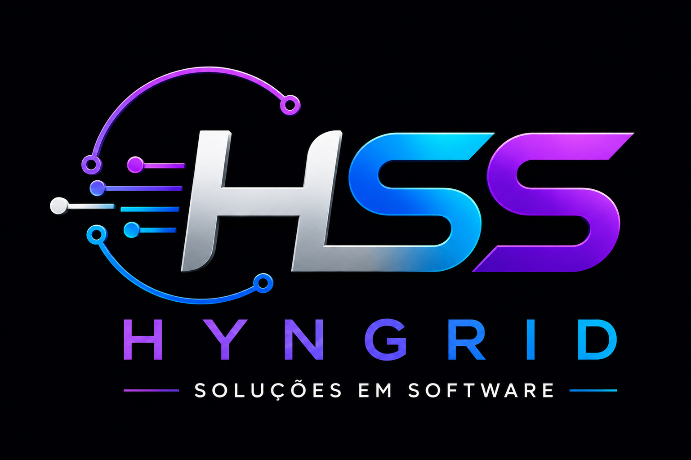
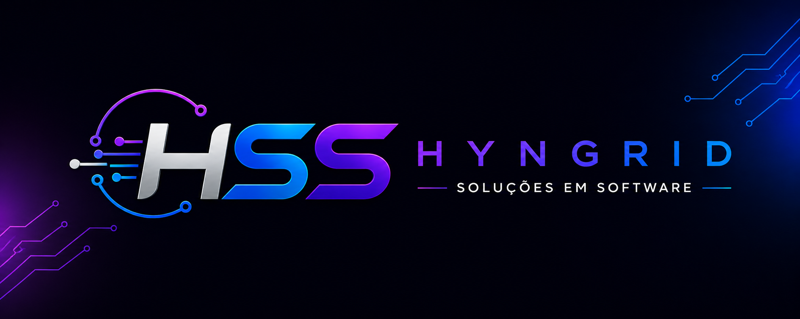

Salesbots para WhatsApp e Kommo
Jornadas conversacionais com botões, tags, notas, mudança de etapa, follow-up e captura de informações.
Soluções em software para operações que precisam escalar
Criamos fluxos inteligentes para WhatsApp, Kommo, atendimento, reservas, backoffice e rotinas administrativas. Menos tarefa manual. Mais controle, velocidade e experiência profissional para o cliente final.

O que a HSS faz
A HSS combina visão de processo, automação e desenvolvimento para criar soluções que funcionam na operação real, não só na apresentação.
Jornadas conversacionais com botões, tags, notas, mudança de etapa, follow-up e captura de informações.
Organização de etapas, gatilhos, mensagens e rotinas para reduzir perda de lead e melhorar resposta.
Robôs para cadastro, conferência, atualização, cobrança, emissão, download e monitoramento.
Aplicações com análise de dados, chatbots, dashboards, processamento de imagens e sistemas web.
Case real
Para a operação da Vista da Serra, a HSS estruturou uma esteira de salesbots no Kommo para atendimento, reservas, check-in, hospedagem, recorrência e recuperação de oportunidades perdidas.
Primeira resposta, qualificação e direcionamento do pedido.
Retomada automática para leads sem resposta.
Confirmação, próximos passos e preparação da experiência.
Horários, localização, guia, Wi-Fi e dúvidas antes da chegada.
Coleta de avaliação e registro do retorno do hóspede.
Motivo de perda, nota no CRM e reativação de oportunidade.
Como entregamos
Entendemos etapas, mensagens, campos, perdas e pontos repetitivos.
Montamos a lógica do fluxo com decisões, botões, notas e gatilhos.
Configuramos salesbots, integrações e rotinas com teste técnico.
Ajustamos com dados reais e ampliamos o que gera resultado.
Base técnica

Vamos tirar sua operação do manual
A HSS pode começar por um diagnóstico do seu funil, atendimento, reservas, backoffice ou rotina administrativa.